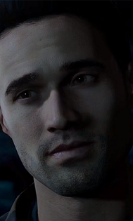

|
|
Ashley is described in-game as academic, inquisitive, and forthright.
She seems to love books. She dislikes horror movies and dreams of being an author.
Ashley seems to be friendly, cheerful, and generally happy to be around her friends,
despite what happened a year ago. She seems to be more polite and serious than the
other protagonists, as she doesn't use profanity often like other group members.
Ashley is shown to be very observant, yet she is also easily scared due to her wild
imagination, which is shown in later chapters.
|
|
Christopher Hartley, known to his friends as Chris id described as methodical,
protective, and humorous, Chris' three highest base
traits are charitable, funny and curious. He's very affable and has a witty sense of
humor which can be off-putting to his friends. He's analytical, not one to believe in
the occult, and isn't easily scared.
Chris is also a lover of gadgets, and can't go long without looking at his phone screen.
He dreams of being an app designer. He loves technology, and can't stand a place without
internet access.
|
|
|
Emily is described in-game as intelligent, resourceful, and persuasive.
She has a quick tongue and a sharp wit, and is known in the group for her
withering put-downs. Emily dreams of being a magazine style editor, has a
passion for fashion, and dislikes not getting her way in situations.
She is quick to temper, and very disagreeable when another's line of
thinking is not her own.
|

|
Jessica Riley, known to her friends as Jess id described in-game as
confident, trusting, and irreverent, Jessica is a typical provocative young woman,
who is quite brash in personality and dreams of being a model.
She is typically laid back, flirty and playful, constantly giving nicknames and acting
immature. However, once provoked, she can be quite defensive and fierce. She does seem
to care deeply for animals, being shocked and upset after killing a bird and seeing
the mauled deer.
|
|
|
Joshua Washington, known to his friends as Josh
is described as thoughtful, loving, and complex. Josh's interactions with the
other survivors tend to be humorous. He cares for his friends, acts as a brotherly
figure to Chris, and likes to make sure everyone is having a good time. He goes to
Sam for support after the loss of his sisters.
His dreams of following his father's footsteps in becoming a film producer make him very
knowledgeable about special effects and movie props and as such, he constantly uses
phrases and words from movies.
|
|
Matthew Taylor, referred to by his friends as Matt
is described in-game as motivated, ambitious and active,
which is mostly remarking on his visible passion for sports.
Matt is also described as having low bravery, which is mainly translated to mean
that he is a pushover, especially when it comes to his new girlfriend, Emily, to
whom he is fiercely loyal to. Their relationship can be clearly quite one-sided
at times, and Emily may take advantage of this trait.
|
|

|
Michael Munroe., known to his friends as Mike
id described in-game as intelligent, driven and persuasive, Mike is known among
the survivors for being promiscuous, and "loves women" despite his hatred of commitment.
Mike comes across as being self-absorbed, somewhat vain, immature and an all
round stereotypical 'jock'.
|
|
Samantha Giddings, known to her friends as Sam
Sam is described in-game as diligent, considerate, and adventurous. She seems to be
the most level-headed and friendly member of the group and is rarely the cause of drama,
even though she can be spunky and have somewhat of a strong personality.
Sam is a warm individual who cares deeply about her friends and their feelings.
She loves and genuinely cares about animals
and nature, and her dream job is to be a conservationist.
|